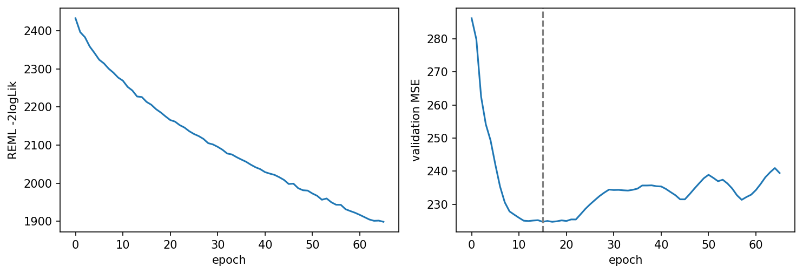

Training models
m2n2 trains the networks, the fixed effects \(\beta\) and the variances jointly, by minibatch gradient descent on the REML loss. The networks are then frozen, and the mixed model is polished by pyreml.
The fit method
model.fit(
n_epoch = 1000,
batch_size = None,
validation = 0.1,
patience = 50,
verbose = True,
full_REML = True,
)| Argument | Meaning |
|---|---|
n_epoch |
Maximum number of epochs. Defaults to 1000. |
batch_size |
Rows per minibatch. Defaults to None: full batch. |
validation |
Fraction of the labelled rows held out for early stopping. Defaults to None: no validation. |
patience |
Epochs without improvement of the validation score before stopping. Defaults to 50, None never stops. |
verbose |
Prints the loss and the score at each epoch. |
full_REML |
Runs the pyreml initialization and the REML of the polish. Defaults to True; False skips both, for datasets too large for them. |
The pipeline:
- Initialization of \(\beta\) and the variances, OLS only with
full_REML = False. - REML descent of the network parameters, \(\beta\) and the variances, on minibatches (see Loss function).
- Validation at each epoch, early stopping and restoration of the best state.
- Polish: REML and HMME with the networks frozen, HMME only with
full_REML = False.
Initialization
With full_REML = True, the model is first fitted by pyreml without the RandomNN terms, on the labelled rows: it initializes \(\beta\), and the variances of the Random terms and of the residual. With full_REML = False, this fit is skipped: \(\beta\) is initialized by ordinary least squares on the labelled rows, and the variances of the Random terms and of the residual at their pyreml initial values. In both cases, the variances of the RandomNN terms are initialized at the variance of the response.
Loss function
Once the random effects are integrated out, the model reads:
\[ y \sim N\big(X\beta,\ V\big), \qquad V = \sum_j Z_j G_j Z_j^\top + R, \]
with one term \(j\) per random effect, and \(R\) the covariance of the residual. For a RandomNN term, \(Z_j = \bigoplus_{k=1}^{q_j} \nu(z_{(k)}, \theta)\), with \(\nu\) the network of its Embedding and \(q_j\) the number of groups, and \(G_j = \sigma^2_{u_j} I\). For a pyreml Random term, \(Z_j\) and \(G_j\) follow its specification.
The network parameters \(\theta\) only enter \(V\): like the variances, they are variance parameters, estimated jointly with \(\beta\) by restricted maximum of likelihood (REML):
\[ -2\ell_{\text{REML}} = \log\lvert V\rvert + r^\top V^{-1} r + \log\lvert X^\top V^{-1} X\rvert + (n - p) \log(2\pi), \qquad r = y - X\beta. \]
The random effects \(u_j\) do not enter the loss: they are predicted afterwards by solving Henderson’s mixed model equations (HMME).
Minibatches
At each epoch, the labelled training rows are shuffled and split into minibatches of batch_size rows, the incomplete last batch dropped. As the embeddings are computed row-wise, the covariance of a minibatch \(B\) is the submatrix \(V_B\) of \(V\), and \(y_B \sim N(X_B\beta, V_B)\) exactly: the loss of a minibatch is the REML of the corresponding sub-model. When a level is absent from the minibatch, \(X_B\) loses rank, e.g. an empty column, or the reference level of a qualitative effect, the intercept being then the sum of the present dummies. The REML of the sub-model is then computed on a basis of the columns of \(X_B\), selected by pivoted QR: the fixed effects it cannot estimate are left out of this minibatch. The observations are not independent: they share the \(u_j\), and \(V\) is not diagonal. The minibatch losses therefore do not add up to the full REML: minibatch descent is a stochastic approximation of it, which performs well empirically (Simchoni & Rosset, 2023).
The loss is computed by pyreml, on the SMW path when the total number of columns of \(Z = [Z_1 \mid Z_2 \mid \dots]\) is below \(n_B\), on \(V_B\) directly otherwise. The gradient flows by autograd through the variances, \(\beta\) and the networks. Each network is stepped by the optimizer of its Embedding, AdamW (Loshchilov & Hutter, 2019) by default, and \(\beta\) and the variances by Adam (Kingma & Ba, 2017), at the learning rates lr_beta and lr_var. A network shared by several terms is embedded once per minibatch: its gradient gathers the contributions of all of them, and its optimizer steps once.
model.loss records the mean minibatch loss of each epoch. It scales with \(n_B\): curves are comparable at fixed batch_size only.
Validation and early stopping
Trained on the marginal likelihood, a deep kernel can overfit more severely than a network trained alone (Ober et al., 2021). For this reason, an early stopping strategy is proposed by m2n2.
With validation set, a fraction of the labelled rows is held out once, at random. At each epoch, the networks in eval() mode, the held-out rows \(v\) are predicted by their BLUP from the training rows \(t\):
\[ \hat y_v = X_v \beta + Z_v G Z_t^\top V_t^{-1} (y_t - X_t \beta), \qquad V_t = Z_t G Z_t^\top + R_t, \]
with \(Z = [Z_1 \mid Z_2 \mid \dots]\) and \(G\) the block diagonal of the \(G_j\). Their mean squared error is recorded in model.score.
The best state (weights of every network, \(\beta\), variances) is kept. Training stops after patience epochs without improvement, and the best state is restored. Without validation, training runs n_epoch epochs and the last state is kept.
Each validation solves a dense system in \(V_t\), of size \(n_t \times n_t\).
The held-out rows, the minibatches, the network initializations and the dropout masks all draw from the PyTorch generator: torch.manual_seed makes the training reproducible.
Polish
The networks are frozen in eval() mode and the embeddings computed once. The model is then a linear mixed model with a known random design, refitted by pyreml on every labelled row, held-out ones included:
- REML re-estimates \(\beta\) and the variances, by L-BFGS with its adaptive convergence criterion;
- HMME gives the BLUE of \(\beta\), the BLUP of every \(u_j\), and their error variances.
Both run in double, as the whole mixed model. With full_REML = False, the REML is skipped: HMME runs on the variances at the end of training (restored state with validation).
Monitoring
| Accessor | Content |
|---|---|
model.loss |
Mean minibatch REML loss at each epoch. |
model.score |
Validation MSE at each epoch, empty without validation. |
model.opti_REML.loss |
REML loss at each iteration of the polish. |
model.convergence |
Whether the polish met the convergence criterion, None with full_REML = False. |
model.opti_REML.duration |
Wall-clock time of the polish, in seconds. |
The opti_REML accessors are not set with full_REML = False.
Training curves
model.plot() plots them, here on a small example:

The validation MSE rises once the networks overfit; the dashed line marks the restored epoch, from which the polish is run.